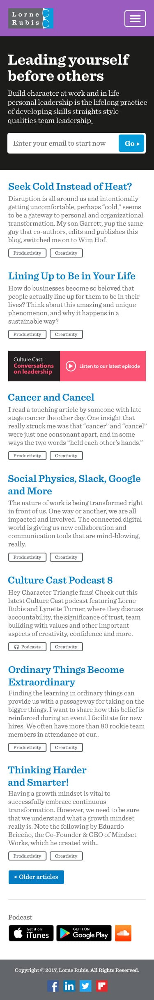
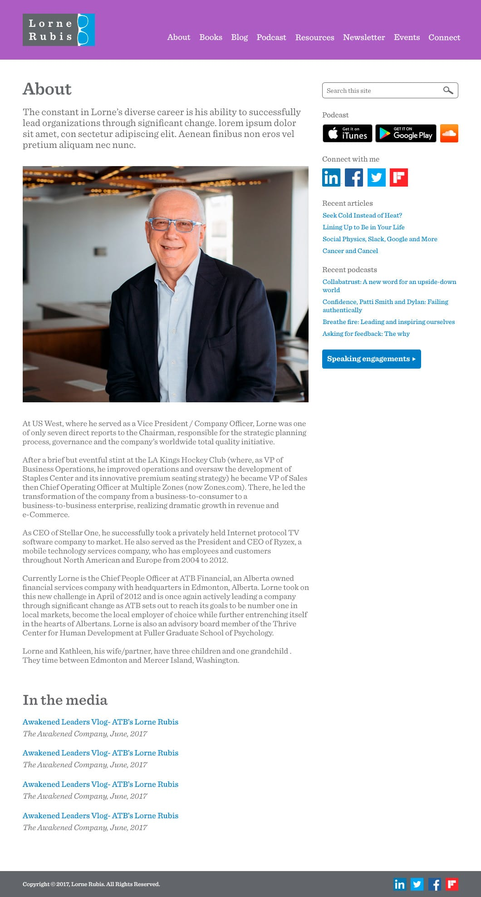
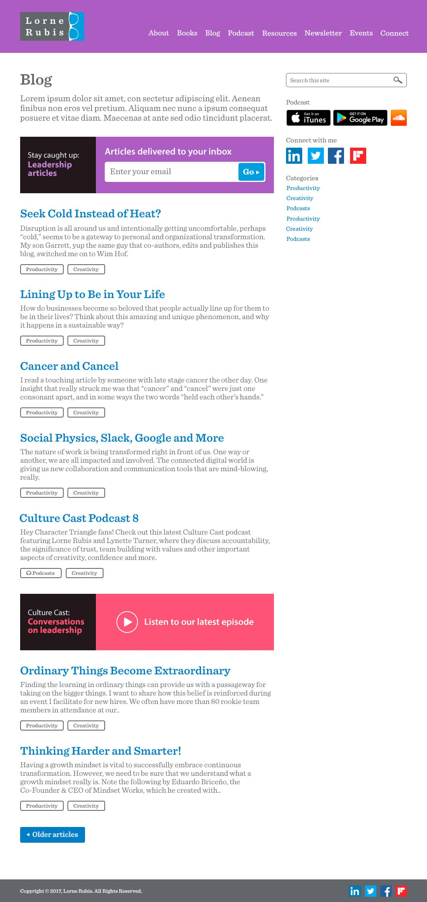

Project: Lorne Rubis website redesign
Lorne Rubis is a personal leadership specialist sharing his insight through articles, email newsletters, podcasts, and in person, at events.
Problem
Lorne's old website needed a update. It was outdated in content, CMS publishing functionality, design, and in accessibility. The site also wasn't responsive.

Who
The target audience was business professionals and individuals interested in being leaders, aged 25-54.
My role
I worked with two developers, a writer, a project manager, an art director, and the client. My role as the designer was to conduct research (interview the client, competitive analysis), create wireframes, design high fidelity mocks, and provide CSS styling to the development team.
Research: interviewing the client
The project manager and I met with the client to find out more about why he wanted a redesign and what his objectives were. Lorne wanted to be a thought leader and to create a community for those seeking personal leadership growth. He wanted to provide meaningful content for leaders to share and to lead themselves with. He also wanted to grow readership, reach, and engagement.
We needed to set up the website to engage readers, and we had to ensure the website displayed Lorne's content efficiently so that the material was easy to view and easy to find.
Teamwork
With many goals, different members of the team began on their projects. My teammates started working on Lorne's new logo and branding, as well as SEO, writing, and WordPress plugin research while I began on comparative research.
Research: comparative analysis
I looked through blog sites of other leaders who had similar content on leadership and personal development. Some trends I shared with the team included:
- social sharing blocks for each article,
- strong visual photography of the leader,
- clear call to actions to contact the leader,
- clear information on what the site is offering,
- links to other sections of the site throughout content pages,
- quotes displayed boldly in articles, and
- bold, contrasted subscription buttons in prominent places.
Suggestions
I compiled my research findings along with weighted suggestions for the client and presented them. From there, we decided which suggestions we'd implement for the current design, and which we'd implement in a future iteration (they were usually parked if they were too development heavy for the deadline).
Layout
Next, I worked on the layout of each page. I organized the content and added links on the pages to other relevant pages for cross-pollination. I ensured newsletter and podcast sign up CTAs were high enough on pages to be easily discoverable. I made sure external links to Lorne's podcast and social media accounts were widely available. My biggest goal was to cross-pollinate as much content as was appropriate so that the audience would be exposed to valuable content they could use to become better leaders.
The homepage wireframe below shows promo areas for the blog, podcast, and resources. There are also external links to Lorne's social media accounts. It was laid out in a way that if there was a new visitor to the site, they'd be able to find what they're looking for, and have other content to browse.
The "About" wireframe is an example of a secondary page, again with promo areas for different sections of the site and external links to keep the audience engaged and informed.
Photography
Because photography is so important to show the subject leader in a professional light, I worked with a photographer to create a shot list to get high quality, professional photographs that would really pop in the website design.
High fidelity mocks
Once the wireframes were signed off, I began on the visual design.
I used the logo another designer had created, and because Lorne was a team member at ATB, I leveraged the ATB brand colours.
I created multiple designs of the homepage with varying colours. I did different versions so that the client could have more of a choice to match a design with his professional personality. I used clear text and appropriate spacing for the audience to easily read and navigate the website, and leveraged the bright colours for subscriptions, pull quotes, and for other call to action elements so that they could stand out.
Solution
We created a website that answered the client's needs, and we hoped, the audience's needs as well. The content was more attractive to look at, easier to find, and the website had the functionality the authors were looking for. I was also able to use the website styling and translate it to Lorne's other online properties including his podcasts, social media accounts, and email templates.
The client was happy and sent a public note of thanks in his following newsletter: "Special thanks to the great web team at ATB who took this web re-design on as an extra project. This was WAY beyond and added to an already very heavy work load for all of them. You can see their professional work in the design. I cannot express my appreciation adequately.".



Learnings
I know some of the problems and goals came from user feedback, but going back, I would have wanted to be more involved in that- digging into the feedback and setting up usability testing as well as card sorting for the hierarchy of the navigation and page content.